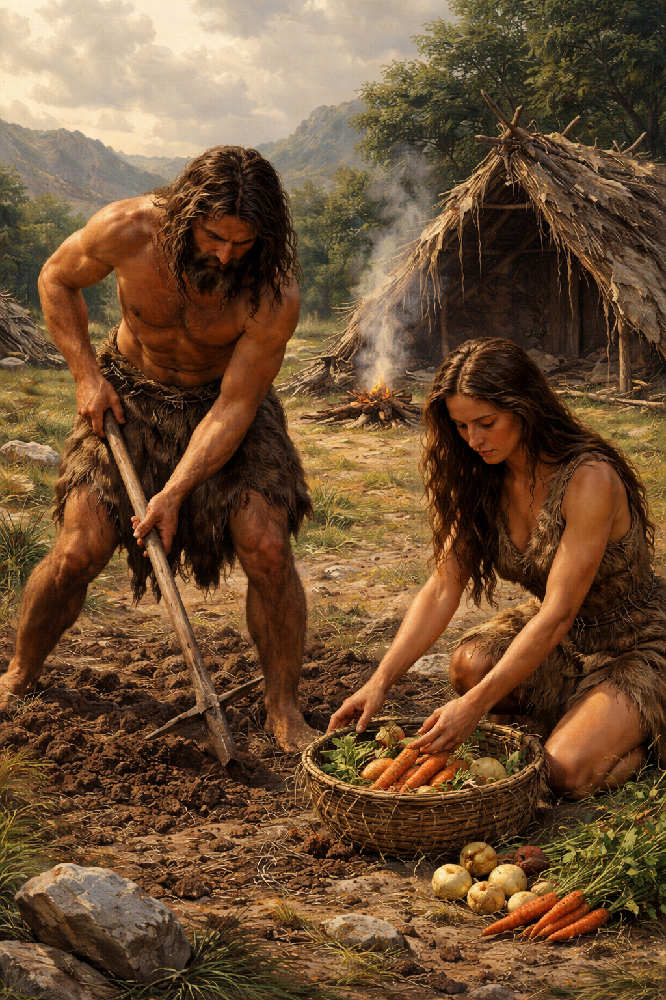

When Adam and Eve got banned from eden they first found it hard having to grow their own stuff and having to go and collect their food everytime it was ready or it would spoil and get rotten. After a while they started getting used to their new way of living they adapted and built a shelter, they each had roles, Adams role was to go out and hunt for food and do the hard labour, Eves job was to work on the shelter and prepare the foods and dishes for her and Adam.
